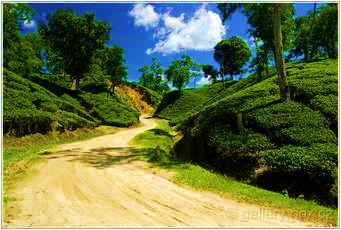

<p style="text-align: justify;">Srimangal is the tea capital of Bangladesh.It is renowned for the excesive growth of tea.This place is very beautiful people must watch and visit this place.Sreemangal is situated in Moulvibazar district in sylhet division. Sreemangal is an Upazila. It is famous for tea garden. Rain all time occurs here. Nature has adorned sreemangal with green tress. Its natural scenery can blow anyones mind.This place is full of beauty.Your visit to this place worth it.</p>
